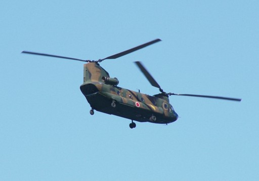

Sky in the Sky
1 / 60 seconds
There is a base of the helicopter of the Ground Self-Defense Force nearby.
The helicopter flying the traffic pattern can be closely seen
from the park in the opposite bank of the Kisarazu port.
When I visited the park for the first time,
I was overwhelmed to the helicopter seen from such a close distance.
However, I felt let down when I saw the pictures that I had taken.
The wings of the helicopter were standing still like a stick.

Because the shutter speed is too fast, the appearance where the wings rotate cannot be caught.
Chasing the airframe that moves becomes difficult
though the rotation of the wings comes to be caught when the shutter speed is lowered.
I tested the minimum of shutter speed without blur. My limits were 1/60 seconds.
CH47 Chinook

AH-1S